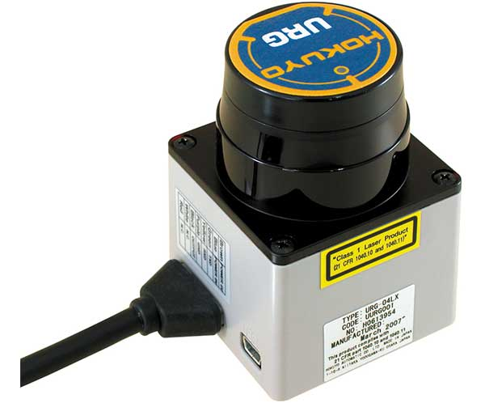
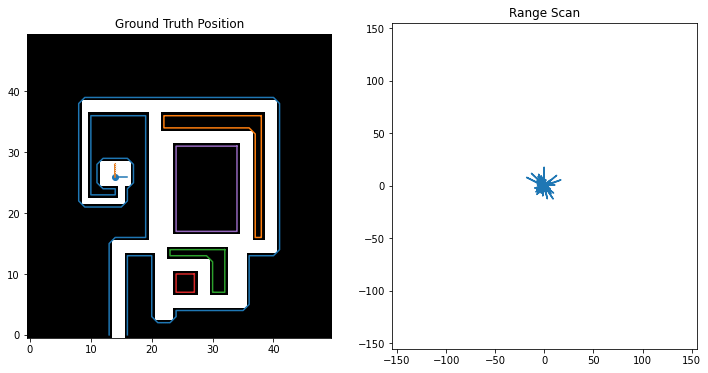

Week 6: Bayesian Robot Localization
Chris Tralie
NOTE: We'll spend the better part of two days on this exercise, and it will help get you ready for the next mini assignment
The purpose of this exercise is to get you practice with the Viterbi algorithm for finding an optimal sequence of states through a Hidden Markov Model (HMM). In this case, the hidden states are the position of a robot in 2D, and the observations are omnidirectional range scans. This is an idealized model of a real "LIDAR scanner" such as the Hokuyo URG-04LX laser range scanner, which is able to sweep a laser in a 270 degree field of view in front of it
For this exercise, I've created a synthetic robot that can move right/left/up/down on a 2D grid, and which is always oriented the same way. Below is an image of this robot moving around. The ground truth position of the robot (the hidden state) is shown on the left on a map of the environment, while the laser scan (observation) is shown on the right

The above is an idealized example, however, because the scan is rarely this perfect. Usually there is noise that perturbs the true range measurements; that is, we end up measuring that a wall is either closer or further than it actually is at a particular angle. We'll model the noise here as a multiplicative Gaussian; that is, if the ground truth range is r, then the observed range m(r) is
\[ m(r) = r(1 + \alpha n)\]
where n is a "standard Gaussian distributed" random variable with distribution
\[ n \sim \frac{1}{\sqrt{2 \pi}} e^{-n^2/2} \]
and α is some parameter set ahead of time. In other words, the further away the measurement is, the more it can be perturbed. Below is the code I used to sample from this noise model, taking advantage of numpy's built in randn method for sampling random variables from the standard Gaussian
Below is an example where α = 0.2

Below is an example where α = 2
At this level of noise, it seems like we're hardly getting any useful information. However, amazingly, if you use the above sensor model and assume that the robot is equally likely to visit any of its neighbors, then you can actually recover a pretty good estimate of the robot's trajectory using the Viterbi algorithm. Below is a plot of the original trajectory next to what the algorithm recovered here (NOTE: results may vary based on the noise samples):

This is the power of sequence modeling; even if our measurements are total crap at a particular instant in time, if they have even a little bit of signal, then we can "boost" the signal strength by looking at many states in sequence.
Programming Task
Click here to download the starter code for this exercise.
Below is some code you can use to initialize a world and to simulate the scans of a trajectory through that world
Next, you'll need to figure out what perfect observations look like at each grid cell in the world so you can figure out the probability that you observed a scan given that you were at a particular cell. There are N open grid cells in the world indexed from 0 to N-1, and the robot can be at any one of them at any time. The member variable X of the env object is a 2D array that holds their positions, so X[i] gives the [x, y] coordinate list for the ith point. Therefore, the code below will create a list of all perfect range scans from each position in the world
Finally, there's a list member variable env.neighbors, where env.neighbors[i] lists the indices of the neighbors of state i.
Now, you have all of the information you need to extract the optimal sequence of states using the Viterbi algorithm! Let's say you come up with a list of state indices called states. Then the following code will extract and plot the coordinates of the trajectory you estimated on top of the "ground truth" (correct) trajectory
First try to make sure you can handle the case where α = 0, then ratchet up the noise and see how much noise the algorithm can take and still give a good result.
For The Bored...
If you finish this early, here are a few things you can try
- In addition to modeling the position, allow the robot to rotate. How would you change your state space? How would you update your observations to handle a rotation?
- Think about how you might store some "second order" information about where the robot has been like velocity. If we assume the law of inertia, the robot is more likely to continue moving in the direction of its velocity than it is to make a sudden turn, so you can use non-uniform transition probabilities to neighbors.